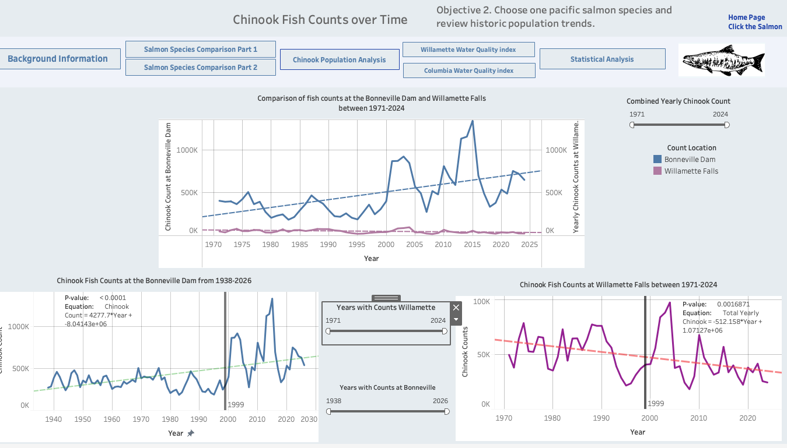

01PYTHON ANALYSIS · TABLEAU
Chinook Salmon Returns & Water Quality
Annual water chemistry showed no clear relationship with Chinook returns in this analysis.
I compared salmon returns and water quality in the Columbia and Willamette rivers.